Statystyki opisowe są fundamentalnymi narzędziami w badaniach nauk społecznych, zapewniającymi zwięzłe podsumowanie charakterystyk danych. Pełnią kilka kluczowych funkcji:
Podsumowanie dużych zbiorów danych w przystępne informacje
Identyfikacja wzorców i trendów w danych
Wykrywanie potencjalnych anomalii lub wartości odstających
Zapewnienie podstawy do dalszej analizy statystycznej
12.1 Introduction to Sigma Notation (Σ) | Wprowadzenie do Notacji Sigma (Σ)
What is Sigma? | Co to jest notacja sumacyjna Sigma? Sigma (Σ) is a mathematical operator that tells us to sum (add up) a sequence of terms - it functions as an instruction to perform addition of all elements in a specified range. | Sigma (Σ) to operator matematyczny, który nakazuje nam zsumować (dodać) sekwencję wyrazów - działa jak instrukcja wykonania dodawania wszystkich elementów w określonym zakresie.
Purpose: | Cel: Provides a compact way to write sums of many similar terms using a single symbol, avoiding lengthy addition expressions. | Zapewnia zwięzły sposób zapisu sum wielu podobnych wyrazów za pomocą jednego symbolu, unikając długich wyrażeń dodawania.
12.1.1 Basic Formula | Podstawowa formuła
The general form of a sigma notation is: | Ogólna forma notacji sigma to:
\sum_{i=a}^{b} f(i)
Index of Summation: | Indeks sumowania:i
Lower Limit: | Dolna granica:a
Upper Limit: | Górna granica:b
Function: | Funkcja:f(i)
12.1.2 Simple Example | Prosty przykład
Consider you want to add the first five positive integers: | Załóżmy, że chcesz dodać pierwsze pięć dodatnich liczb całkowitych:
\sum_{i=1}^{5} i = 1 + 2 + 3 + 4 + 5 = 15
Adds the first five positive integers. | Dodaje pierwsze pięć dodatnich liczb całkowitych.
12.1.3 Example with a Function | Przykład z funkcją
Suppose you want to sum the squares of the first four positive integers: | Załóżmy, że chcesz zsumować kwadraty pierwszych czterech dodatnich liczb całkowitych:
\sum_{i=1}^{4} i^2 = 1^2 + 2^2 + 3^2 + 4^2 = 30
Sum of the squares of the first four positive integers. | Suma kwadratów pierwszych czterech dodatnich liczb całkowitych.
12.1.4 Practical Application in Statistics | Praktyczne zastosowanie w statystyce
12.1.5 Benefits of Using Sigma Notation | Korzyści z używania notacji Sigma
Clarity: | Jasność: Provides a clear and concise representation of various statistical formulas. | Zapewnia jasne i zwięzłe przedstawienie statystycznych formuł.
Operatory Sumy (Σ) i Iloczynu (Π)
12.1.5.1 Operator Sigma (Σ)
\sum to operator sumowania, który nakazuje nam dodać wyrazy:
\sum_{i=1}^{n} x_i = x_1 + x_2 + ... + x_n
gdzie: - i to zmienna indeksowa - Dolna wartość pod Σ (tutaj i=1) to punkt początkowy - Górna wartość (tutaj n) to punkt końcowy
12.1.5.2 Operator Pi (Π)
\prod to operator iloczynu, który nakazuje nam pomnożyć wyrazy:
Rozkład danych informuje o tym, jakie wartości przyjmuje zmienna i jak często.
Zrozumienie rozkładów danych jest kluczowe dla analizy i wizualizacji danych. W tym dokumencie przyjrzymy się różnym typom rozkładów i sposobom ich wizualizacji przy użyciu ggplot2 w R.
12.2.1 Rozkład normalny
Rozkład normalny, znany również jako rozkład Gaussa, jest symetryczny i ma kształt dzwonu.
# Generowanie danych o rozkładzie normalnymdane_normalne <-data.frame(x =rnorm(1000))# Wykresggplot(dane_normalne, aes(x)) +geom_histogram(aes(y = ..density..), bins =30, fill ="skyblue", color ="black") +geom_density(color ="red") +labs(title ="Rozkład normalny", x ="Wartość", y ="Gęstość")
Warning: The dot-dot notation (`..density..`) was deprecated in ggplot2 3.4.0.
ℹ Please use `after_stat(density)` instead.
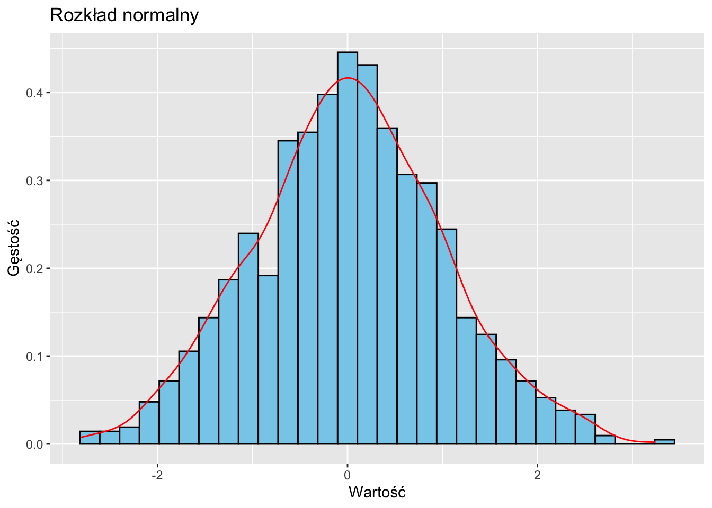
12.2.2 Rozkład jednostajny
W rozkładzie jednostajnym wszystkie wartości mają równe prawdopodobieństwo wystąpienia.
# Generowanie danych o rozkładzie jednostajnymdane_jednostajne <-data.frame(x =runif(1000))# Wykresggplot(dane_jednostajne, aes(x)) +geom_histogram(aes(y = ..density..), bins =30, fill ="lightgreen", color ="black") +geom_density(color ="red") +labs(title ="Rozkład jednostajny", x ="Wartość", y ="Gęstość")
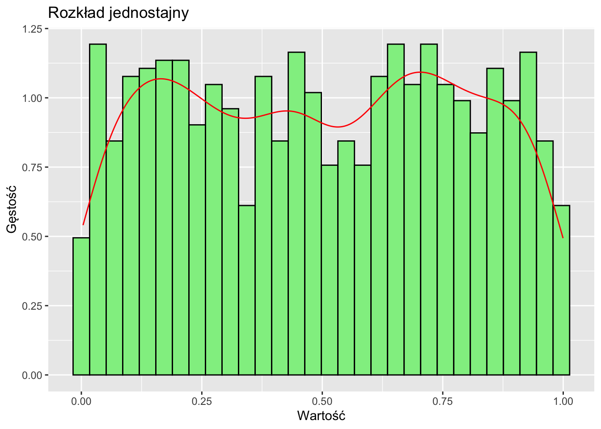
12.2.3 Rozkłady skośne
Rozkłady skośne są asymetryczne, z jednym ogonem dłuższym niż drugi.
# Generowanie danych o rozkładzie prawoskośnymdane_prawoskosne <-data.frame(x =rlnorm(1000))# Wykresggplot(dane_prawoskosne, aes(x)) +geom_histogram(aes(y = ..density..), bins =30, fill ="lightyellow", color ="black") +geom_density(color ="red") +labs(title ="Rozkład prawoskośny", x ="Wartość", y ="Gęstość")
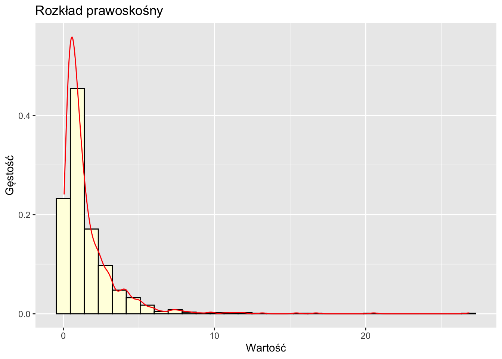
12.2.4 Rozkład bimodalny
Rozkład bimodalny ma dwa szczyty (dwie dominanty), wskazujące na dwie odrębne podgrupy w danych.
# Generowanie danych bimodalnychdane_bimodalne <-data.frame(x =c(rnorm(500, mean =-2), rnorm(500, mean =2)))# Wykresggplot(dane_bimodalne, aes(x)) +geom_histogram(aes(y = ..density..), bins =30, fill ="lightpink", color ="black") +geom_density(color ="red") +labs(title ="Rozkład bimodalny", x ="Wartość", y ="Gęstość")
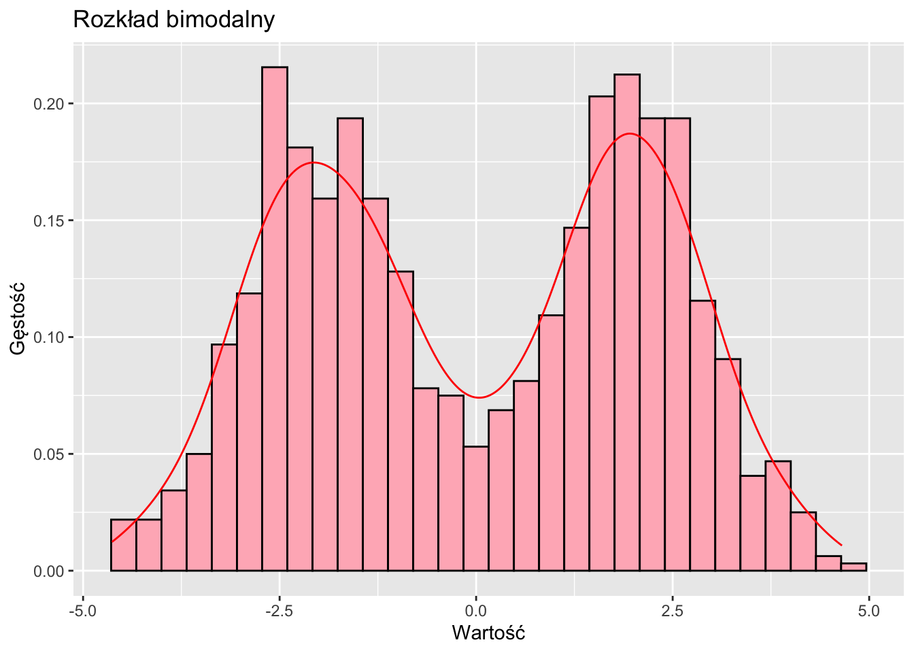
Distribution
Key Properties
Social Examples
Normal
Symmetric, bell-shaped, most values near mean
Height, IQ scores, standardized test scores
Uniform
Equal probability across range
Birth dates in year, arrival times in hour
Bimodal
Two peaks, suggests subgroups
Age in college towns, polarized opinions
Log-normal
Right-skewed, cannot be negative
Income, house prices, social media followers
Power law
Extreme skew, “rich get richer”
City sizes
12.3 Wizualizacja rozkładów danych rzeczywistych
Użyjemy zbioru danych palmerpenguins do zbadania rozkładów danych rzeczywistych.
12.3.1 Histogram i wykres gęstości
Understanding Histograms and Density
⭐ A histogram is a special graph for numerical data where:
Data is grouped into ranges (called “bins”)
Bars touch each other (unlike bar charts!) because the data is continuous
Each bar’s height shows how many values fall into that range
Think of density as showing how common or concentrated certain values are in your data:
A higher point on a density curve (or taller bar in a histogram) means those values appear more frequently in your data
A lower point means those values are less common
Just like a crowded area has more people per space (higher density), a taller part of the graph shows values that appear more often in your dataset!
ggplot(penguins, aes(x = flipper_length_mm)) +geom_histogram(aes(y = ..density..), bins =30, fill ="lightblue", color ="black") +geom_density(color ="red") +labs(title ="Rozkład długości płetw pingwinów", x ="Długość płetwy (mm)", y ="Gęstość")
Warning: Removed 2 rows containing non-finite outside the scale range
(`stat_bin()`).
Warning: Removed 2 rows containing non-finite outside the scale range
(`stat_density()`).
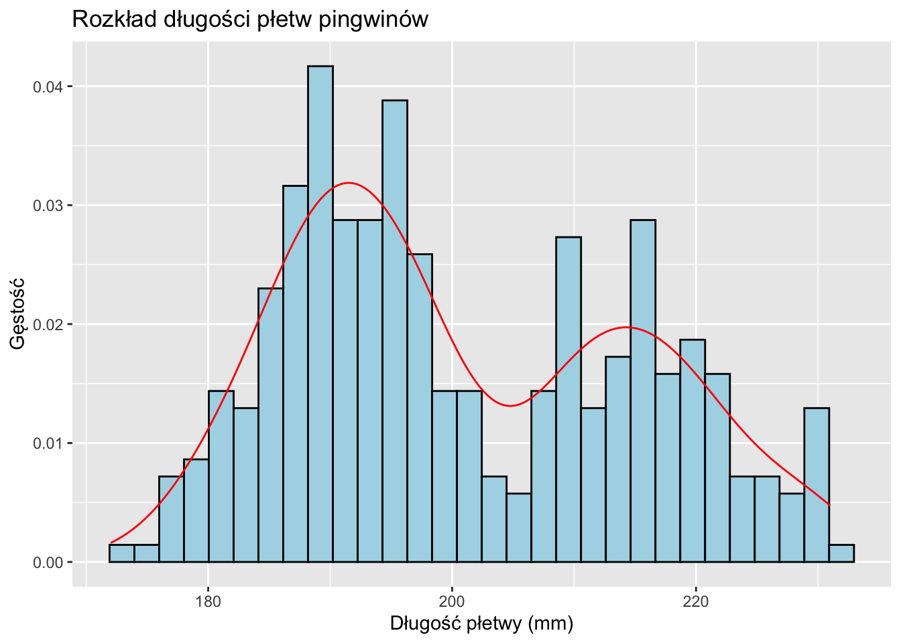
12.3.2 Wykres pudełkowy
Wykresy pudełkowe są przydatne do porównywania rozkładów między kategoriami.
ggplot(penguins, aes(x = species, y = body_mass_g, fill = species)) +geom_boxplot() +labs(title ="Rozkład masy ciała pingwinów według gatunku", x ="Gatunek", y ="Masa ciała (g)")
Warning: Removed 2 rows containing non-finite outside the scale range
(`stat_boxplot()`).
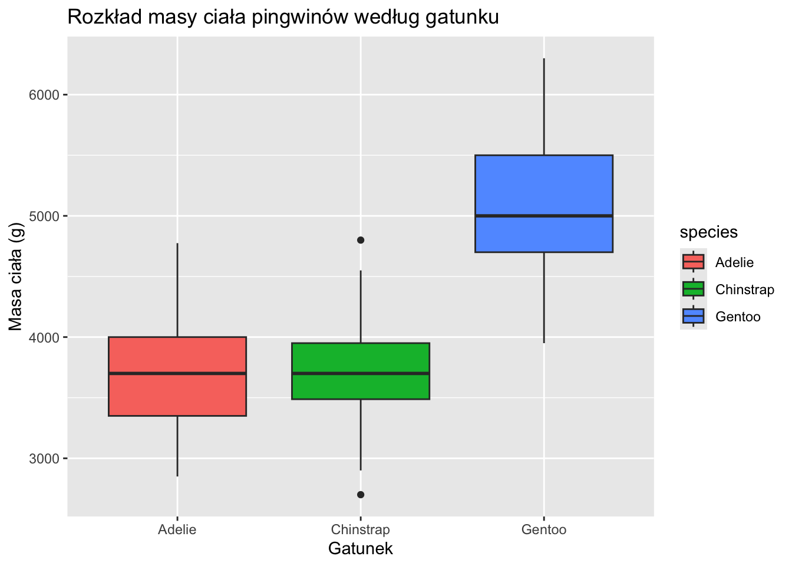
12.3.3 Wykres skrzypcowy
Wykresy skrzypcowe łączą cechy wykresu pudełkowego i wykresu gęstości.
ggplot(penguins, aes(x = species, y = body_mass_g, fill = species)) +geom_violin(trim =FALSE) +geom_boxplot(width =0.1, fill ="white") +labs(title ="Rozkład masy ciała pingwinów według gatunku", x ="Gatunek", y ="Masa ciała (g)")
Warning: Removed 2 rows containing non-finite outside the scale range
(`stat_ydensity()`).
Warning: Removed 2 rows containing non-finite outside the scale range
(`stat_boxplot()`).
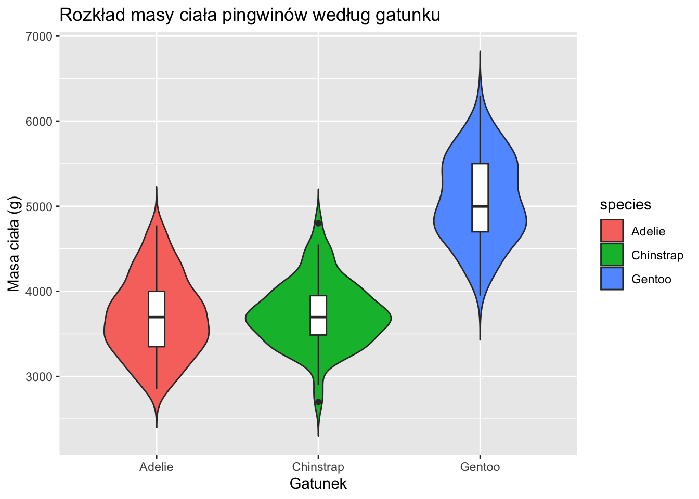
12.3.4 Wykres grzbietowy
Wykresy grzbietowe są przydatne do porównywania wielu rozkładów.
library(ggridges)ggplot(penguins, aes(x = flipper_length_mm, y = species, fill = species)) +geom_density_ridges(alpha =0.6) +labs(title ="Rozkład długości płetw według gatunku pingwina",x ="Długość płetwy (mm)",y ="Gatunek")
Picking joint bandwidth of 2.38
Warning: Removed 2 rows containing non-finite outside the scale range
(`stat_density_ridges()`).
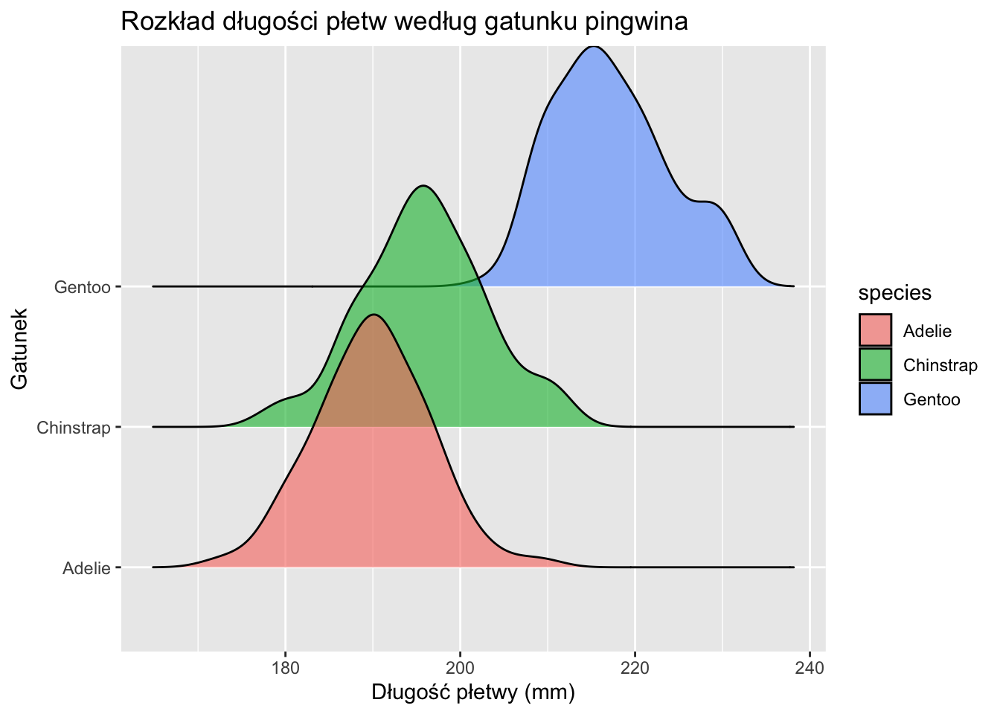
12.3.5 Podsumowanie
Zrozumienie i wizualizacja rozkładów danych są kluczowe w analizie danych. ggplot2 zapewnia elastyczny i potężny zestaw narzędzi do tworzenia różnych typów wykresów rozkładów. Badając różne techniki wizualizacji, możemy uzyskać wgląd w podstawowe wzorce i charakterystyki naszych danych.
Rodzaje i Formaty Zbiorów Danych
12.3.6 Dane Przekrojowe
Obserwacje zebrane w jednym punkcie czasowym dla wielu podmiotów:
Osoba
Wiek
Dochód
Wykształcenie
1
25
5000
Licencjat
2
35
7500
Magister
3
45
9000
Doktorat
12.3.7 Szeregi Czasowe
Obserwacje jednego podmiotu w kolejnych punktach czasowych:
Rok
PKB (w mld)
Stopa Bezrobocia
2018
20.580
3,9%
2019
21.433
3,7%
2020
20.933
8,1%
12.3.8 Dane Panelowe (Longitudinalne)
Obserwacje wielu podmiotów w czasie:
Kraj
Rok
PKB per capita
Długość życia
Polska
2018
32.794
76,7
Polska
2019
35.118
76,8
Niemcy
2018
46.194
81,9
Niemcy
2019
46.194
82,0
12.3.9 Dane Przekrojowo-Czasowe (TSCS)
Szczególny przypadek danych panelowych gdzie:
Liczba punktów czasowych > liczba podmiotów
Struktura podobna do danych panelowych
Często stosowane w ekonomii i naukach politycznych
12.3.10 Formaty Danych
12.3.10.1 Format Szeroki
Każdy wiersz to podmiot; kolumny to zmienne/punkty czasowe:
Kraj
PKB_2018
PKB_2019
DŻ_2018
DŻ_2019
Polska
32.794
35.118
76,7
76,8
Niemcy
46.194
46.194
81,9
82,0
12.3.10.2 Format Długi
Każdy wiersz to unikalna kombinacja podmiot-czas-zmienna:
Kraj
Rok
Zmienna
Wartość
Polska
2018
PKB per capita
32.794
Polska
2019
PKB per capita
35.118
Polska
2018
Długość życia
76,7
Polska
2019
Długość życia
76,8
Niemcy
2018
PKB per capita
46.194
Niemcy
2019
PKB per capita
46.194
Niemcy
2018
Długość życia
81,9
Niemcy
2019
Długość życia
82,0
Uwaga: Format długi jest zazwyczaj preferowany do:
Manipulacji danymi w R i Pythonie
Analiz statystycznych
Wizualizacji danych
Modelowania efektów mieszanych
Analiz powtarzanych pomiarów
12.4 Wartości Odstające (Outliers)
Przed zagłębieniem się w konkretne miary, kluczowe jest zrozumienie pojęcia wartości odstających, ponieważ mogą one znacząco wpływać na wiele statystyk opisowych.
Wartości odstające to punkty danych, które znacznie różnią się od innych obserwacji w zbiorze danych. Mogą wystąpić z powodu:
Błędów pomiaru lub zapisu
Prawdziwych ekstremalnych wartości w populacji
Próbkowania z innej populacji
Wartości odstające mogą mieć istotny wpływ na wiele miar statystycznych, szczególnie tych opartych na średnich lub sumach kwadratów odchyleń. Dlatego ważne jest, aby:
Identyfikować wartości odstające zarówno poprzez metody statystyczne, jak i wiedzę dziedzinową
Badać przyczyny wartości odstających
Podejmować świadome decyzje o tym, czy włączać je do analiz, czy nie
W tym przewodniku omówimy, jak różne miary opisowe są dotknięte przez wartości odstające.
12.5 Symbole Stosowane w Statystyce - podsumowanie
Miara
Parametr Populacji
Statystyka z Próby
Alternatywne Oznaczenia
Uwagi
Liczebność
N
n
-
Całkowita liczba obserwacji
Średnia
\mu
\bar{x}
E(X), M
E(X) stosowane w rachunku prawdopodobieństwa
Wariancja
\sigma^2
s^2
\text{Var}(X), V(X)
Kwadrat odchyleń od średniej
Odchylenie standardowe
\sigma
s
\text{OS}, \text{std}
Pierwiastek z wariancji
Frakcja/Proporcja
\pi, P
\hat{p}
\text{fr}
Częstości względne
Współczynnik korelacji
\rho
r
\text{kor}(x,y)
Wartości od -1 do +1
Błąd standardowy
\sigma_{\bar{x}}
s_{\bar{x}}
\text{BS}
Błąd standardowy średniej
Suma
\sum
\sum
\sum_{i=1}^n
Z indeksowaniem
Pojedyncza obserwacja
X_i
x_i
-
i-ta obserwacja
Kowariancja
\sigma_{xy}
s_{xy}
\text{Cov}(X,Y)
Wspólna zmienność
Mediana
\eta
\text{Me}
M
Wartość środkowa
Rozstęp
R
r
\text{max}(X) - \text{min}(X)
Miara rozproszenia
Dominanta
\text{Mo}
\text{mo}
\text{mod}
Wartość najczęstsza
Skośność
\gamma_1
g_1
\text{SK}
Asymetria rozkładu
Kurtoza
\gamma_2
g_2
\text{KU}
Spłaszczenie rozkładu
Dodatkowe ważne wzory:
Momenty z próby: m_k = \frac{1}{n}\sum_{i=1}^n (x_i - \bar{x})^k
Momenty populacji: \mu_k = E[(X - \mu)^k]
Błąd standardowy dla populacji: \sigma_{\bar{x}} = \frac{\sigma}{\sqrt{n}}
Błąd standardowy z próby: s_{\bar{x}} = \frac{s}{\sqrt{n}}
12.6 Miary Tendencji Centralnej
Miary tendencji centralnej mają na celu identyfikację “typowej” lub “centralnej” wartości w zbiorze danych. Trzy podstawowe miary to średnia, mediana i moda.
12.6.1 Średnia Arytmetyczna
Średnia arytmetyczna to suma wszystkich wartości podzielona przez liczbę wartości.
Wzór:\bar{x} = \frac{1}{n}\sum_{i=1}^n x_i
Ważna Właściwość: Średnia jest punktem równowagi w danych. Suma odchyleń od średniej zawsze wynosi zero:
\sum_{i=1}^n (x_i - \bar{x}) = 0
Ta właściwość sprawia, że średnia jest użyteczna w wielu obliczeniach statystycznych.
Zrozumienie średniej jako punktu równowagi 🎯
Rozważmy zbiór danych X = \{1, 2, 6, 7, 9\} na osi liczbowej, wyobrażając go sobie jako huśtawkę:
Średnia (\mu) działa jak idealny punkt równowagi tej huśtawki. Dla naszych danych:
\mu = \frac{1 + 2 + 6 + 7 + 9}{5} = 5
12.6.2 Co się dzieje przy różnych punktach podparcia? 🤔
Punkt podparcia w 6 (za wysoko):
Lewa strona: Wartości (1, 2) są poniżej
Prawa strona: Wartości (7, 9) są powyżej
\sum odległości z lewej = (6-1) + (6-2) = 9
\sum odległości z prawej = (7-6) + (9-6) = 4
Huśtawka przechyla się w lewo! ⬅️ bo 9 > 4
Punkt podparcia w 4 (za nisko):
Lewa strona: Wartości (1, 2) są poniżej
Prawa strona: Wartości (6, 7, 9) są powyżej
\sum odległości z lewej = (4-1) + (4-2) = 5
\sum odległości z prawej = (6-4) + (7-4) + (9-4) = 10
Huśtawka przechyla się w prawo! ➡️ bo 5 < 10
Punkt podparcia w średniej (5) (idealna równowaga):
\sum odległości poniżej = \sum odległości powyżej
((5-1) + (5-2)) = ((6-5) + (7-5) + (9-5))
7 = 7 ✨ Idealna równowaga!
To pokazuje, dlaczego średnia jest unikalnym punktem równowagi, gdzie:
\sum_{i=1}^n (x_i - \mu) = 0
Huśtawka zawsze będzie się przechylać, chyba że punkt podparcia zostanie umieszczony dokładnie w średniej! 🎪
Średnia jako punkt równowagi
Ta wizualizacja pokazuje, jak średnia arytmetyczna (5) działa jako punkt równowagi pomiędzy skupionymi punktami z lewej strony a rozproszonymi punktami z prawej strony:
Lewa strona średniej:
Punkty o wartościach 2 i 3
Blisko siebie (różnica 1 jednostka)
Odległości od średniej: 3 i 2 jednostki
Suma “ciążenia” = 5 jednostek
Prawa strona średniej:
Punkty o wartościach 6 i 9
Bardziej oddalone (różnica 3 jednostki)
Odległości od średniej: 1 i 4 jednostki
Suma “ciążenia” = 5 jednostek
Kluczowe obserwacje:
Średnia (5) jest punktem równowagi, mimo że:
Punkty po lewej są skupione (2,3)
Punkty po prawej są rozproszone (6,9)
Zielone strzałki pokazują odległości od średniej
Równowaga jest zachowana ponieważ:
Suma odległości się równoważy: (5-2) + (5-3) = (6-5) + (9-5)
Całkowita suma odległości = 5 jednostek po każdej stronie
Mediana to środkowa wartość, gdy dane są uporządkowane.
Przykład Ręcznego Obliczenia:
Używając tego samego zbioru danych: 2, 4, 4, 5, 5, 7, 9
Krok
Opis
Wynik
1
Uporządkuj dane
2, 4, 4, 5, 5, 7, 9
2
Znajdź środkową wartość
5
Dla parzystej liczby wartości, weź średnią z dwóch środkowych wartości.
Obliczenie w R:
dane <-c(2, 4, 4, 5, 5, 7, 9)median(dane)
[1] 5
Zalety:
Nie jest zniekształcona przez skrajne wartości odstające (outliers)
Lepsza dla rozkładów skośnych
Wady:
Nie wykorzystuje wszystkich punktów danych
Mniej przydatna do dalszych obliczeń statystycznych
Warning
Jak znaleźć pozycję mediany w zbiorze danych:
Najpierw posortuj dane rosnąco
Gdy n jest nieparzyste:
Pozycja mediany = \frac{n + 1}{2}
Gdy n jest parzyste:
Pierwsza pozycja mediany = \frac{n}{2}
Druga pozycja mediany = \frac{n}{2} + 1
Mediana = \frac{\text{wartość na pozycji }\frac{n}{2} + \text{wartość na pozycji }(\frac{n}{2}+1)}{2}
Przykłady:
Nieparzyste n=7: pozycja = \frac{7+1}{2} = 4-ta wartość
Parzyste n=8: pozycje = \frac{8}{2} = 4-ta i 4+1 = 5-ta wartość
12.6.4 Moda (Dominanta)
Moda to najczęściej występująca wartość.
Przykład Ręcznego Obliczenia:
Używając zbioru danych: 2, 4, 4, 5, 5, 7, 9
Wartość
Częstość
2
1
4
2
5
2
7
1
9
1
Moda to 4 i 5 (rozkład bimodalny).
Obliczenie w R:
library(modeest)mfv(dane) # Najczęściej występująca wartość
[1] 4 5
Zalety:
Jedyna miara tendencji centralnej dla danych nominalnych
Może identyfikować wiele punktów szczytowych (dominujących) w danych
Wady:
Nie zawsze jednoznacznie zdefiniowana
Nie przydatna dla danych ciągłych
12.6.5 Średnia (arytmetyczna) Ważona (*)
Średnia ważona jest używana, gdy niektóre punkty danych są ważniejsze niż inne. Występują dwa typy średnich ważonych: z wagami nienormalizowanymi i z wagami znormalizowanymi.
12.6.5.1 Średnia Ważona z Wagami Nienormalizowanymi
Jest to standardowa forma średniej ważonej, gdzie wagi mogą być dowolnymi liczbami dodatnimi reprezentującymi ważność każdego punktu danych.
x <-c(2, 4, 5, 7)w <-c(1, 2, 3, 1)weighted.mean(x, w)
[1] 4.571429
12.6.5.2 Średnia Ważona z Wagami Znormalizowanymi (Ułamki)
W tym przypadku wagi są ułamkami sumującymi się do 1, reprezentującymi proporcję ważności dla każdego punktu danych.
Wzór:\bar{x}_w = \sum_{i=1}^n w_i x_i, gdzie \sum_{i=1}^n w_i = 1
Przykład Obliczeń Ręcznych:
Obliczmy średnią ważoną dla zbioru danych: 2, 4, 5, 7 z wagami znormalizowanymi 0.1, 0.3, 0.4, 0.2
Krok
Opis
Obliczenie
1
Pomnóż każdą wartość przez jej wagę
(2 * 0.1) + (4 * 0.3) + (5 * 0.4) + (7 * 0.2)
2
Zsumuj wyniki
0.2 + 1.2 + 2.0 + 1.4 = 4.8
Obliczenia w R:
x <-c(2, 4, 5, 7)w_normalized <-c(0.1, 0.3, 0.4, 0.2) # Uwaga: sumują się do 1sum(x * w_normalized)
[1] 4.8
Zalety Średnich Ważonych:
Uwzględniają różną ważność punktów danych
Przydatne w analizie ankiet o różnych wielkościach próby lub poziomach ważności
Mogą korygować nierówne prawdopodobieństwa w projektach próbkowania
Wady Średnich Ważonych:
Wymagają uzasadnienia dla wag
Mogą być niewłaściwie wykorzystane do manipulacji wynikami
Mogą być mniej intuicyjne w interpretacji niż prosta średnia arytmetyczna
12.7 Miary Zmienności (Rozproszenia)
Te miary opisują, jak bardzo rozproszone są dane.
Zrozumienie Wariancji
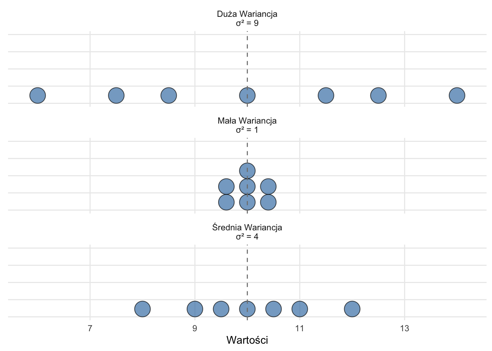
Figure 12.1: Trzy wykresy punktowe pokazujące rosnącą wariancję przy stałej średniej
Powyższe trzy wykresy punktowe pokazują, w jaki sposób wariancja mierzy rozproszenie danych wokół wartości centralnej:
Wszystkie rozkłady mają tę samą średnią (μ = 10), oznaczoną linią przerywaną
Mała Wariancja (σ² = 1): Punkty są skupione blisko średniej
Średnia Wariancja (σ² = 4): Punkty wykazują umiarkowane rozproszenie
Duża Wariancja (σ² = 9): Punkty są szeroko rozproszone wokół średniej
Zrozumienie Różnych Poziomów Zmienności
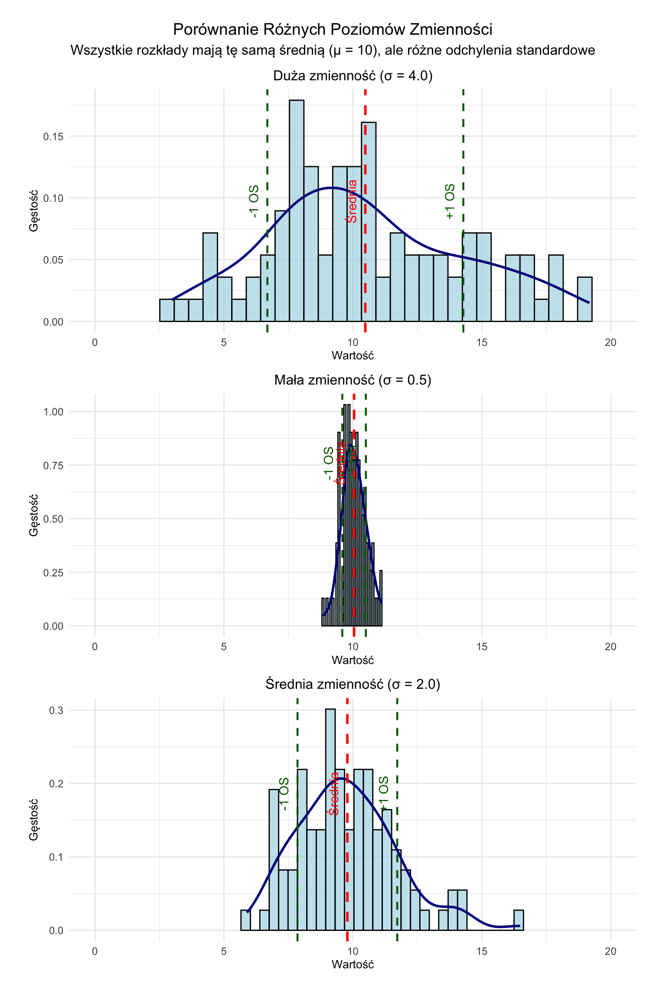
Ta wizualizacja przedstawia trzy rozkłady normalne o tej samej średniej (μ = 10), ale różnych poziomach zmienności:
Mała zmienność (σ = 0.5)
Punkty danych grupują się ściśle wokół średniej
Krzywa gęstości jest wysoka i wąska
Większość obserwacji mieści się w przedziale ±0.5 jednostki (odchylenia stand.) od średniej
Średnia zmienność (σ = 2.0)
Punkty danych są bardziej rozproszone wokół średniej
Krzywa gęstości jest niższa i szersza
Większość obserwacji mieści się w przedziale ±2 jednostki od średniej
Duża zmienność (σ = 4.0)
Punkty danych są szeroko rozproszone wokół średniej
Krzywa gęstości jest znacznie bardziej płaska i szeroka
Większość obserwacji mieści się w przedziale ±4 jednostki od średniej
Zwróć uwagę, jak odchylenie standardowe (σ) bezpośrednio wpływa na rozproszenie rozkładu - większe wartości σ wskazują na większą zmienność danych, podczas gdy mniejsze wartości oznaczają, że punkty danych mają tendencję do grupowania się bliżej średniej.
12.7.1 Rozstęp
Rozstęp to różnica między wartością maksymalną a minimalną.
Wzór:R = x_{max} - x_{min}
Przykład Ręcznego Obliczenia:
Używając zbioru danych: 2, 4, 4, 5, 5, 7, 9
Krok
Opis
Obliczenie
1
Znajdź wartość maksymalną
9
2
Znajdź wartość minimalną
2
3
Odejmij minimum od maksimum
9 - 2 = 7
Obliczenie w R:
dane <-c(2, 4, 4, 5, 5, 7, 9)range(dane)
[1] 2 9
max(dane) -min(dane)
[1] 7
Zalety:
Prosty do obliczenia i zrozumienia
Szybka informacja o ogólnym rozproszeniu danych
Wady:
Bardzo wrażliwy na wartości odstające
Nie dostarcza informacji o rozkładzie między skrajnościami
12.7.2 Rozstęp Międzykwartylowy (IQR)
IQR to różnica między 75. a 25. percentylem (3. a 1. kwartylem).
Wzór:IQR = Q_3 - Q_1
Aby znaleźć kwartyle ręcznie:
Dla nieparzystej liczby wartości:
Q2 (mediana) to środkowa wartość
Q1 to mediana dolnej połowy (wyłączając medianę dla wszystkich obserwacji)
Q3 to mediana górnej połowy (wyłączając medianę dla wszystkich obserwacji)
Dla parzystej liczby wartości:
Q2 to średnia z dwóch środkowych wartości
Q1 to mediana dolnej połowy (wyłączając medianę dla wszystkich obserwacji)
Q3 to mediana górnej połowy (wyłączając medianę dla wszystkich obserwacji)
Przykład Ręcznego Obliczenia:
Używając zbioru danych: 2, 4, 4, 5, 5, 7, 9
Krok
Opis
Obliczenie
1
Uporządkuj dane
2, 4, 4, 5, 5, 7, 9
2
Znajdź Q2 (medianę)
5
3
Znajdź Q1 (medianę dolnej połowy)
4
4
Znajdź Q3 (medianę górnej połowy)
7
5
Oblicz IQR
Q3 - Q1 = 7 - 4 = 3
Obliczenie w R:
dane <-c(2, 4, 4, 5, 5, 7, 9)print(dane)
[1] 2 4 4 5 5 7 9
quantile(dane, type =1)
0% 25% 50% 75% 100%
2 4 5 7 9
IQR(dane, type =1)
[1] 3
Zalety:
Odporny na wartości odstające
Dostarcza informacji o rozproszeniu środkowych 50% danych
Wady:
Ignoruje ogony rozkładu
Mniej efektywny niż odchylenie standardowe dla rozkładów normalnych
12.7.3 Wariancja
Wariancja mierzy średnie kwadratowe odchylenie od średniej.
Średnia służy jako punkt odniesienia (niebieska przerywana linia)
Odchylenia pokazują odległość od średniej (czerwone kropkowane linie)
Podniesienie do kwadratu sprawia, że wszystkie odchylenia są dodatnie (niebieskie słupki)
Większe odchylenia mają większy wpływ na wariancję
Przykład Ręcznego Obliczenia:
Używając zbioru danych: 2, 4, 4, 5, 5, 7, 9
Krok
Opis
Obliczenie
1
Oblicz średnią
\bar{x} = 5,14
2
Odejmij średnią od każdej obserwacji i podnieś wynik do kwadratu
(2 - 5,14)^2 = 9,86
(4 - 5,14)^2 = 1,30
(4 - 5,14)^2 = 1,30
(5 - 5,14)^2 = 0,02
(5 - 5,14)^2 = 0,02
(7 - 5,14)^2 = 3,46
(9 - 5,14)^2 = 14,90
3
Sumuj kwadraty różnic
30,86
4
Podziel przez (n-1), czyli przez liczbę obserwacji - 1
30,86 / 6 = 5,14
Obliczenie w R:
var(dane)
[1] 5.142857
Zalety:
Wykorzystuje wszystkie punkty danych
Podstawa dla wielu testów statystycznych*
Wady:
Jednostki są podniesione do kwadratu, co utrudnia interpretację
Wrażliwa na wartości odstające
Poprawka Bessela: Dlaczego Dzielimy przez (n-1), a nie po prostu przez n
Gdy obliczamy odchylenia od średniej, ich suma musi wynosić zero. To matematyczny fakt: \sum(x_i - \bar{x}) = 0
Pomyśl o tym Tak:
Jeśli masz 5 liczb i ich średnią:
Po obliczeniu 4 odchyleń od średniej
5-te odchylenie MUSI być takie, żeby suma była zero
Nie masz tak naprawdę 5 niezależnych odchyleń
Masz tylko 4 prawdziwie “swobodne” odchylenia
Prosty Przykład:
Liczby: 2, 4, 6, 8, 10
Średnia = 6
Odchylenia: -4, -2, 0, +2, +4
Zauważ, że sumują się do zera
Jeśli znasz dowolne 4 odchylenia, 5-te jest z góry określone!
Dlatego Właśnie:
Przy obliczaniu wariancji: s^2 = \frac{\sum(x_i - \bar{x})^2}{n-1}
Dzielimy przez (n-1), a nie n
Ponieważ tylko (n-1) odchyleń jest naprawdę niezależnych
Ostatnie jest określone przez pozostałe
Stopnie Swobody:
n = liczba obserwacji
1 = ograniczenie (odchylenia muszą sumować się do zera)
n-1 = stopnie swobody = liczba prawdziwie niezależnych odchyleń
Kiedy Stosować:
Przy obliczaniu wariancji z próby
Przy obliczaniu odchylenia standardowego z próby
Kiedy NIE Stosować:
W obliczeniach dla całej populacji (gdy mamy wszystkie dane)
Przy obliczaniu odchylenia od ustalonej, znanej wartości (nie obliczonej średniej)
Pamiętaj:
To nie jest tylko statystyczny trik
Odchylenia od średniej muszą sumować się do zera
To ograniczenie kosztuje nas jeden stopień swobody
12.7.4 Odchylenie Standardowe
Odchylenie standardowe to pierwiastek kwadratowy z wariancji i mierzy przeciętne rozproszenie danych względem ich średniej arytmetycznej. W przeciwieństwie do wariancji, jest to miara mianowana i interpretowana w jednostkach bdanej zmiennej.
12.8.2 Percentyle: Bardziej Precyzyjna Miara Względnej Pozycji (*)
12.8.2.1 Czym są Percentyle?
Percentyle dają nam bardziej szczegółowy obraz, dzieląc dane na 100 równych części. W przeciwieństwie do kwartyli, percentyle używają interpolacji liniowej.
Kluczowe Punkty:
25-ty percentyl równa się Q1
50-ty percentyl równa się Q2 (mediana)
75-ty percentyl równa się Q3
12.8.2.2 Obliczanie Percentyli
Wzór: P_k = \frac{k(n+1)}{100}
Gdzie:
P_k to pozycja dla k-tego percentyla
k to percentyl, który chcemy znaleźć (1-100)
n to liczba obserwacji
Przykład 3: Znajdowanie 60-tego Percentyla Użyjmy wyników zadań domowych uczniów: 72, 75, 78, 80, 82, 85, 88, 90, 92, 95
Krok 1: Oblicz pozycję
n = 10 wyników
Dla 60-tego percentyla: P_{60} = \frac{60(10+1)}{100} = 6.6
Musimy przejść 0.6 drogi między 85 a 88 P_{60} = 85 + 0.6(88-85)P_{60} = 85 + 0.6(3)P_{60} = 85 + 1.8 = 86.8
Co to oznacza: 60% uczniów uzyskało wynik 86.8 lub niższy.
12.8.3 Rangi Percentylowe (PR) (*)
12.8.3.1 Czym jest Ranga Percentylowa?
Podczas gdy percentyle mówią nam o wartości na określonej pozycji, ranga percentylowa mówi nam, jaki procent wartości znajduje się poniżej określonego wyniku. Można to traktować jako odpowiedź na pytanie “Jaki procent klasy uzyskał wynik niższy niż ja?”
PR = \frac{\text{liczba wartości poniżej } + 0.5 \times \text{liczba równych wartości}}{\text{całkowita liczba wartości}} \times 100
Przykład 4: Znajdowanie Rangi Percentylowej Rozważmy te wyniki egzaminu:
Interpretacja: Wynik 75 jest wyższy niż 45% wyników w klasie.
Uwaga:
P1: “Dlaczego używamy 0.5 dla równych wartości w PR?”
O1: Jest tak, ponieważ zakładamy, że osoby z tym samym wynikiem są równomiernie rozłożone na tej pozycji. To jak powiedzenie, że dzielą pozycję po równo.
Mediana pełni dwie odrębne, ale powiązane ze sobą role:
A. Jako Miara Centrum:
Reprezentuje środkowy punkt danych
Równoważy liczbę obserwacji po obu stronach
Jest odporna na wartości odstające (w przeciwieństwie do średniej arytmetycznej)
B. Jako Miara Pozycji Względnej:
Wyznacza 50-ty percentyl
Dzieli dane na dwie równe części
Każdą wartość można do niej odnieść:
Poniżej mediany: dolne 50%
Powyżej mediany: górne 50%
Ta podwójna natura sprawia, że mediana jest szczególnie przydatna do:
Opisywania wartości typowych (tendencja centralna)
Zrozumienia pozycji w rozkładzie (pozycja względna)
Dokonywania porównań między różnymi zbiorami danych
12.9 Miary Kształtu
12.9.1 Skośność
12.9.1.1 Definicja
Skośność kwantyfikuje asymetrię rozkładu danych. Wskazuje, czy dane grupują się bardziej po jednej stronie średniej niż po drugiej.
12.9.1.2 Wyrażenie Matematyczne
SK = \frac{n}{(n-1)(n-2)} \sum_{i=1}^n (\frac{x_i - \bar{x}}{s})^3 gdzie:
n to wielkość próby
x_i to i-ta obserwacja
\bar{x} to średnia z próby
s to odchylenie standardowe z próby
12.9.1.3 Przykład: Analiza Frekwencji Wyborczej
library(moments)
Attaching package: 'moments'
The following object is masked from 'package:modeest':
skewness
library(ggplot2)library(tidyverse)# Generowanie przykładowych danych frekwencji w obwodach wyborczychset.seed(123)dane_frekwencji <-c(# Obwody miejskiernorm(300, mean =65, sd =12),# Obwody podmiejskiernorm(400, mean =70, sd =10),# Obwody wiejskiernorm(300, mean =68, sd =15)) |># Zapewnienie, że frekwencja mieści się w przedziale 0-100%pmax(0) |>pmin(100)# Obliczenie i wizualizacjawartosc_skosnosci <-skewness(dane_frekwencji)wartosc_skosnosci
[1] 0.02558143
ggplot(data.frame(x = dane_frekwencji), aes(x = x)) +geom_histogram(bins =50, fill ="skyblue", color ="black") +geom_vline(xintercept =mean(dane_frekwencji), color ="red", linetype ="dashed") +geom_vline(xintercept =median(dane_frekwencji), color ="blue", linetype ="dashed") +labs(title =str_glue("Rozkład Frekwencji w Obwodach Wyborczych (Skośność = {round(wartosc_skosnosci, 4)})"),subtitle ="Czerwona: Średnia, Niebieska: Mediana",x ="Frekwencja Wyborcza (%)",y ="Liczba Obwodów" ) +theme_minimal()
12.9.1.4 Przewodnik Interpretacji
Skośność Dodatnia (> 0): Rozkład ma dłuższy ogon prawy
Skośność Ujemna (< 0): Rozkład ma dłuższy ogon lewy
Skośność Zero: Rozkład w przybliżeniu symetryczny
12.9.2 Kurtoza
12.9.2.1 Definicja
Kurtoza mierzy “ogoniastość” rozkładu, wskazując na obecność wartości ekstremalnych w porównaniu z rozkładem normalnym.
12.9.2.2 Wyrażenie Matematyczne
K = \frac{n(n+1)}{(n-1)(n-2)(n-3)} \sum_{i=1}^n (\frac{x_i - \bar{x}}{s})^4 - \frac{3(n-1)^2}{(n-2)(n-3)}
12.9.2.3 Przykład: Analiza Głosowań Parlamentarnych
# Generowanie przykładowych wyników zgodności głosowańset.seed(456)zgodnosc_glosowan <-c(# Standardowe wzorce głosowaniarnorm(400, mean =75, sd =10),# Przypadki współpracy międzypartyjnejrnorm(80, mean =50, sd =15),# Głosowania zgodne z linią partiirnorm(20, mean =95, sd =5)) |>pmax(0) |>pmin(100)wartosc_kurtozy <-kurtosis(zgodnosc_glosowan)wartosc_kurtozy
[1] 3.849939
# Wizualizacja z porównaniem do rozkładu normalnegozakres_x <-seq(min(zgodnosc_glosowan)-1, max(zgodnosc_glosowan)+1, length.out =100)rozklad_normalny <-dnorm(zakres_x, mean =mean(zgodnosc_glosowan), sd =sd(zgodnosc_glosowan))ggplot() +geom_density(data =data.frame(x = zgodnosc_glosowan), aes(x = x), fill ="skyblue", alpha =0.5 ) +geom_line(data =data.frame(x = zakres_x, y = rozklad_normalny),aes(x = x, y = y),color ="red",linetype ="dashed" ) +labs(title =str_glue("Rozkład Zgodności Głosowań (Kurtoza = {round(wartosc_kurtozy, 4)})"),subtitle ="Rozkład obserwowany (niebieski) vs. Rozkład normalny (czerwony)",x ="Wskaźnik Zgodności Głosowań (%)",y ="Gęstość" ) +theme_minimal()
12.9.2.4 Przewodnik Interpretacji
Nadwyżka Kurtozy: Różnica względem kurtozy rozkładu normalnego
Leptokurtyczny (> 3): Więcej wartości ekstremalnych niż w rozkładzie normalnym
Platykurtyczny (< 3): Mniej wartości ekstremalnych niż w rozkładzie normalnym
Mezokurtyczny (= 3): Podobny do rozkładu normalnego
12.10 Ćwiczenie 1. Porównanie wynagrodzeń
12.10.1 Dane
Mamy dane o wynagrodzeniach (w tysiącach euro) z dwóch małych firm europejskich:
Index
Firma X
Firma Y
1
2
3
2
2
3
3
2
4
4
3
4
5
3
4
6
3
4
7
3
4
8
3
4
9
3
5
10
4
5
11
4
5
12
4
5
13
4
5
14
4
5
15
5
6
16
5
6
17
5
6
18
5
7
19
20
7
20
35
8
12.10.2 Miary tendencji centralnej
12.10.2.1 Średnia arytmetyczna
Średnia arytmetyczna to suma wszystkich wartości podzielona przez ich liczbę.
Wzór: \bar{x} = \frac{\sum_{i=1}^{n} x_i}{n}
12.10.2.1.1 Obliczenia ręczne dla Firmy X
Wartość (x_i)
Częstość (f_i)
x_i \cdot f_i
2
3
6
3
6
18
4
5
20
5
4
20
20
1
20
35
1
35
Suma
n = 20
Suma = 119
\bar{x} = \frac{119}{20} = 5,95
12.10.2.1.2 Obliczenia ręczne dla Firmy Y
Wartość (x_i)
Częstość (f_i)
x_i \cdot f_i
3
2
6
4
6
24
5
6
30
6
3
18
7
2
14
8
1
8
Suma
n = 20
Suma = 100
\bar{y} = \frac{100}{20} = 5
12.10.2.1.3 Weryfikacja w R
X <-c(2,2,2,3,3,3,3,3,3,4,4,4,4,4,5,5,5,5,20,35)Y <-c(3,3,4,4,4,4,4,4,5,5,5,5,5,5,6,6,6,7,7,8)mean(X)
[1] 5.95
mean(Y)
[1] 5
12.10.2.2 Mediana
Mediana to wartość środkowa w uporządkowanym zbiorze danych.
Q1 (25. percentyl): mediana pierwszych 10 liczb = 4
Q2 (50. percentyl, mediana): 5
Q3 (75. percentyl): mediana ostatnich 10 liczb = 6
12.10.4.3 Weryfikacja w R
quantile(X)
0% 25% 50% 75% 100%
2 3 4 5 35
quantile(Y)
0% 25% 50% 75% 100%
3 4 5 6 8
12.10.4.4 IQR
IQR_x = 5 - 3 = 2
IQR_y = 6 - 4 = 2
12.10.5 Wykres pudełkowy Tukeya
Wykres pudełkowy Tukeya wizualnie przedstawia rozkład danych na podstawie kwartyli. Użyjemy biblioteki ggplot2 do stworzenia wykresu.
library(ggplot2)library(tidyr)# Przygotowanie danychdane <-data.frame(Firma =rep(c("X", "Y"), each =20),Wynagrodzenie =c(X, Y))# Tworzenie wykresu pudełkowegoggplot(dane, aes(x = Firma, y = Wynagrodzenie, fill = Firma)) +geom_boxplot() +labs(title ="Rozkład wynagrodzeń w firmach X i Y",x ="Firma",y ="Wynagrodzenie (tysiące euro)") +theme_minimal() +scale_fill_manual(values =c("X"="#69b3a2", "Y"="#404080"))
# Tworzenie wykresu pudełkowegoggplot(dane, aes(x = Firma, y = Wynagrodzenie, fill = Firma)) +geom_boxplot(outliers = F) +labs(title ="Rozkład wynagrodzeń w firmach X i Y",x ="Firma",y ="Wynagrodzenie (tysiące euro)") +theme_minimal() +scale_fill_manual(values =c("X"="#69b3a2", "Y"="#404080"))
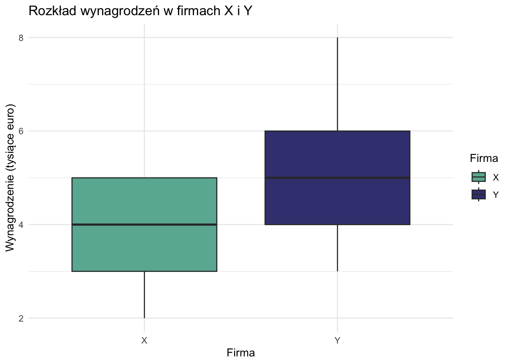
12.10.5.1 Interpretacja wykresu pudełkowego
Pudełko reprezentuje rozstęp międzykwartylowy (IQR) od Q1 do Q3.
Linia wewnątrz pudełka to mediana (Q2).
Wąsy rozciągają się do najmniejszych i największych wartości w granicach 1,5 * IQR.
Punkty poza wąsami są uznawane za wartości odstające.
12.10.6 Porównanie wyników
Miara
Firma X
Firma Y
Średnia
5,95
5,00
Mediana
4
5
Dominanta
3
4 i 5
Wariancja
61,21
1,79
Odchylenie standard.
7,82
1,34
Q1
3
4
Q3
5
6
12.10.6.1 Kluczowe obserwacje:
Tendencja centralna: Firma X ma wyższą średnią, ale niższą medianę niż Firma Y, co wskazuje na prawostronnie skośny rozkład dla Firmy X.
Rozproszenie: Firma X wykazuje znacznie wyższą wariancję i odchylenie standardowe, sugerując większe dysproporcje w wynagrodzeniach.
Kształt rozkładu: Wynagrodzenia w Firmie Y są bardziej skupione, podczas gdy Firma X ma wartości ekstremalne (potencjalne wartości odstające), które znacząco wpływają na jej średnią i wariancję.
Kwartyle: Rozstęp międzykwartylowy (Q3 - Q1) Firmy Y jest nieznacznie większy, ale jej ogólny zakres jest znacznie mniejszy niż Firmy X.
12.10.7 Wnioski
Ta analiza porównawcza ujawnia znaczące różnice w strukturach wynagrodzeń między dwiema firmami. Firma X wykazuje większą zmienność i potencjalną nierówność w swojej skali płac, podczas gdy Firma Y demonstruje bardziej spójny i wąsko rozłożony zakres wynagrodzeń.
12.11 Ćwiczenie 2. Porównanie Zmienności Wielkości Okręgów Wyborczych Między Krajami
12.11.1 Dane
Mamy dane o wielkości okręgów wyborczych z dwóch krajów:
x <-c(1, 3, 5, 7, 9, 11, 13, 15, 17, 19) # Kraj wysoka zmiennośćy <-c(8, 9, 9, 10, 10, 11, 11, 12, 12, 13) # Kraj niska zmiennośćkable(data.frame("Kraj X (Wysoka zm.)"= x,"Kraj Y (Niska zm.)"= y))
Kraj.X..Wysoka.zm..
Kraj.Y..Niska.zm..
1
8
3
9
5
9
7
10
9
10
11
11
13
11
15
12
17
12
19
13
12.11.2 Miary Tendencji Centralnej
12.11.2.1 Średnia Arytmetyczna
Wzór: \bar{x} = \frac{\sum_{i=1}^{n} x_i}{n}
12.11.2.1.1 Obliczenia dla Kraju X
Element
Wartość
1
1
2
3
3
5
4
7
5
9
6
11
7
13
8
15
9
17
10
19
Suma
100
\bar{x} = \frac{100}{10} = 10
mean_x <-mean(x)c("Ręcznie"=10, "R"= mean_x)
Ręcznie R
10 10
12.11.2.1.2 Obliczenia dla Kraju Y
Element
Wartość
1
8
2
9
3
9
4
10
5
10
6
11
7
11
8
12
9
12
10
13
Suma
105
\bar{y} = \frac{105}{10} = 10,5
mean_y <-mean(y)c("Ręcznie"=10.5, "R"= mean_y)
Ręcznie R
10.5 10.5
12.11.2.2 Mediana
Mediana to wartość środkowa w uporządkowanym zbiorze danych.
df_long <-data.frame(kraj =rep(c("X", "Y"), each =10),wielkosc =c(x, y))# Wykres podstawowyp <-ggplot(df_long, aes(x = kraj, y = wielkosc, fill = kraj)) +geom_boxplot(outlier.shape =NA) +# Wyłączamy domyślne punkty odstającegeom_jitter(width =0.2, alpha =0.5) +# Dodajemy punkty z przezroczystościąscale_fill_manual(values =c("X"="#FFA07A", "Y"="#98FB98")) +labs(title ="Porównanie Zmienności Wielkości Okręgów Wyborczych",subtitle =paste("CV: Kraj X =", round(cv_x, 1), "%, Kraj Y =", round(cv_y, 1), "%"),x ="Kraj",y ="Wielkość Okręgu" ) +theme_minimal() +theme(legend.position ="none")# Dodajemy adnotacje z kwartylamip +annotate("text", x =c(1, 1, 1, 2, 2, 2), y =c(max(x)+1, mean(x), min(x)-1, max(y)+1, mean(y), min(y)-1),label =c(paste("Q3 =", quantile(x, 0.75, type=1)),paste("M =", median(x)),paste("Q1 =", quantile(x, 0.25, type=1)),paste("Q3 =", quantile(y, 0.75, type=1)),paste("M =", median(y)),paste("Q1 =", quantile(y, 0.25, type=1)) ),size =3)
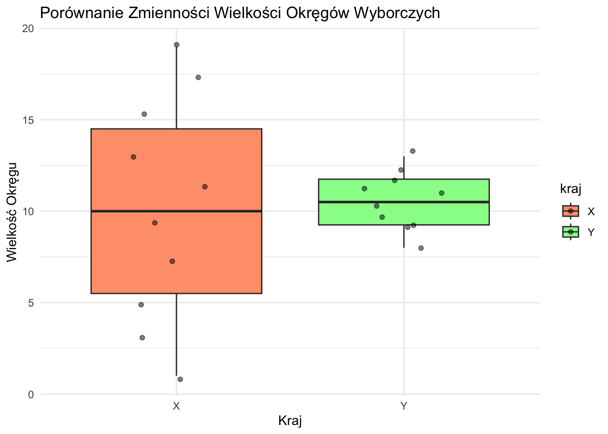
12.11.7 Uwagi Metodologiczne
Obliczenia kwartyli:
Zastosowana metoda wyłączająca medianę może dawać inne wyniki niż domyślne funkcje R
Różnice w metodach obliczeniowych nie wpływają na ogólne wnioski
Warto zawsze zaznaczyć stosowaną metodę w raportach
Wizualizacja:
Wykres pudełkowy skutecznie pokazuje różnice w rozkładach
Dodatkowe punkty pokazują rzeczywiste wartości
Adnotacje ułatwiają interpretację
12.11.8 Podsumowanie
12.11.8.1 Porównanie Miar Statystycznych
Miara
Kraj X
Kraj Y
Różnica względna
Średnia
10,0
10,5
Podobna
Mediana
10,0
10,5
Podobna
Dominanta
Brak
Wielokrotna (9,10,11,12)
-
Rozstęp
18
5
3,6× większy w X
Wariancja
36,67
2,5
14,7× większa w X
IQR
10
3
3,3× większy w X
CV
60,6%
15,0%
4,0× większy w X
12.11.8.2 Charakterystyka Rozkładów
Kraj X:
Rozkład równomierny
Brak dominującej wielkości okręgu (brak dominanty)
Szeroki zakres: od 1 do 19 mandatów
Wysoka zmienność (CV = 60,6%)
Równomierne rozłożenie wartości w zakresie
Kraj Y:
Rozkład skupiony
Wiele typowych wielkości (cztery dominanty)
Wąski zakres: od 8 do 13 mandatów
Niska zmienność (CV = 15,0%)
Wartości skoncentrowane wokół średniej
12.11.8.3 Interpretacja Wykresu Pudełkowego
Wizualizacja w formie wykresu pudełkowego pokazuje:
Elementy Struktury:
Pudełko: Pokazuje rozstęp międzykwartylowy (IQR)
Dolna krawędź: Pierwszy kwartyl (Q1)
Górna krawędź: Trzeci kwartyl (Q3)
Linia wewnętrzna: Mediana (Q2)
Wąsy: Rozciągają się do ±1,5 IQR - Punkty: Pojedyncze wielkości okręgów
Główne Wnioski Wizualne:
Rozmiar Pudełka:
Kraj X: Duże pudełko wskazuje na szeroki rozrzut środkowych 50%
Kraj Y: Małe pudełko pokazuje skupienie wartości środkowych
Długość Wąsów:
Kraj X: Długie wąsy wskazują na szeroki rozkład całkowity
Kraj Y: Krótkie wąsy pokazują ograniczony rozrzut
Rozkład Punktów:
Kraj X: Punkty szeroko rozproszone
Kraj Y: Punkty gęsto skupione
12.11.8.4 Kluczowe Obserwacje
Tendencja Centralna:
Podobne średnie wielkości okręgów
Różne wzorce rozkładu
Odmienne podejścia do standaryzacji
Miary Zmienności:
Wszystkie miary pokazują 3-15 razy większą zmienność w Kraju X
Spójny wzorzec w różnych miarach statystycznych
Systematyczna różnica w projekcie okręgów
Projekt Systemu:
Kraj X: Elastyczne, zróżnicowane podejście
Kraj Y: Ustandaryzowane, jednolite podejście
Różne filozoficzne podejścia do reprezentacji
Implikacje Reprezentatywności:
Kraj X: Zmienna proporcja wyborców do przedstawicieli
Kraj Y: Bardziej spójne poziomy reprezentacji
Różne podejścia do reprezentacji demokratycznej
Analiza ta pokazuje fundamentalne różnice w projektowaniu systemów wyborczych między dwoma krajami, gdzie Kraj X przyjmuje bardziej zróżnicowane podejście, a Kraj Y utrzymuje większą jednolitość w wielkości okręgów wyborczych.
12.12 Zrozumienie Wykresów Pudełkowych na Przykładzie Danych o Długości Życia
- Wykorzystuje wszystkie punkty danych - Podstawa wielu procedur statystycznych
- Wrażliwa na wartości odstające - Jednostki są podniesione do kwadratu (mniej intuicyjne)
Interwałowe, Ilorazowe, niektóre Dyskretne, Ciągłe
Odchylenie standardowe
- Wykorzystuje wszystkie punkty danych - Te same jednostki co oryginalne dane - Szeroko stosowane i zrozumiałe
- Wrażliwe na wartości odstające - Zakłada w przybliżeniu rozkład normalny dla interpretacji
Interwałowe, Ilorazowe, niektóre Dyskretne, Ciągłe
Współczynnik zmienności
- Pozwala na porównanie między zbiorami danych o różnych jednostkach lub średnich
- Może być mylący, gdy średnie są bliskie zeru - Bez znaczenia dla danych z wartościami ujemnymi
Ilorazowe, niektóre Interwałowe
12.18.1.3 Miary Korelacji/Asocjacji
Miara
Zalety
Wady
Zastosowanie do
r Pearsona
- Mierzy zależność liniową - Szeroko stosowany i zrozumiały
- Zakłada rozkład normalny - Wrażliwy na wartości odstające - Uchwytuje tylko zależności liniowe
Interwałowe, Ilorazowe, Ciągłe
Rho Spearmana
- Może być stosowany do danych porządkowych - Uchwytuje zależności monotoniczne - Mniej wrażliwy na wartości odstające
- Traci informacje przez konwersję na rangi - Może pominąć niektóre typy zależności
Porządkowe, Interwałowe, Ilorazowe
Tau Kendalla
- Może być stosowany do danych porządkowych - Bardziej odporny niż Spearman dla małych próbek - Ma ładną interpretację (prawdopodobieństwo zgodności)
- Traci informacje, biorąc pod uwagę tylko porządek - Bardziej intensywny obliczeniowo
Porządkowe, Interwałowe, Ilorazowe
Chi-kwadrat
- Może być stosowany do danych nominalnych - Testuje niezależność zmiennych kategorycznych
- Wymaga dużych rozmiarów próbek - Wrażliwy na rozmiar próbki - Nie mierzy siły asocjacji
Nominalne, Porządkowe
V Craméra
- Może być stosowany do danych nominalnych - Dostarcza miarę siły asocjacji - Znormalizowany do zakresu [0,1]
- Interpretacja może być subiektywna - Może przeszacować asocjację w małych próbkach
Nominalne, Porządkowe
Statistical Measures Applicability / Zastosowanie miar statystycznych
Measure (EN)
Miara (PL)
Nominal
Ordinal
Interval
Ratio
Central Tendency / Tendencja centralna:
Mode
Dominanta
✓
✓
✓
✓
Median
Mediana
-
✓
✓
✓
Arithmetic Mean
Średnia arytmetyczna
-
-
✓*
✓
Geometric Mean
Średnia geometryczna
-
-
-
✓
Harmonic Mean
Średnia harmoniczna
-
-
-
✓
Dispersion / Rozproszenie:
Range
Rozstęp
-
✓
✓
✓
Interquartile Range
Rozstęp międzykwartylowy
-
✓
✓
✓
Mean Absolute Deviation
Średnie odchylenie bezwzględne
-
-
✓
✓
Variance
Wariancja
-
-
✓*
✓
Standard Deviation
Odchylenie standardowe
-
-
✓*
✓
Coefficient of Variation
Współczynnik zmienności
-
-
-
✓
Association / Współzależność:
Chi-square
Chi-kwadrat
✓
✓
✓
✓
Spearman Correlation
Korelacja Spearmana
-
✓
✓
✓
Kendall’s Tau
Tau Kendalla
-
✓
✓
✓
Pearson Correlation
Korelacja Pearsona
-
-
✓*
✓
Covariance
Kowariancja
-
-
✓*
✓
* Theoretically problematic but commonly used in practice / Teoretycznie problematyczne, ale powszechnie stosowane w praktyce
12.18.2 Notes / Uwagi:
Measurement Scales / Skale pomiarowe:
Nominal: Categories without order / Kategorie bez uporządkowania
Ordinal: Ordered categories / Kategorie uporządkowane
Interval: Equal intervals, arbitrary zero / Równe interwały, umowne zero
Ratio: Equal intervals, absolute zero / Równe interwały, absolutne zero
Practical Considerations / Aspekty praktyczne:
Some measures marked with ✓* are commonly used for interval data despite theoretical issues / Niektóre miary oznaczone ✓* są powszechnie stosowane dla danych przedziałowych pomimo problemów teoretycznych
Choice of measure should consider both theoretical appropriateness and practical utility / Wybór miary powinien uwzględniać zarówno poprawność teoretyczną jak i użyteczność praktyczną
More restrictive scales (ratio) allow all measures from less restrictive scales / Bardziej restrykcyjne skale (ilorazowe) pozwalają na wszystkie miary z mniej restrykcyjnych skal